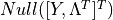
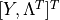

crnt4sbml.MassConservationApproach¶
-
class
crnt4sbml.MassConservationApproach(cgraph)[source]¶ Class for constructing variables and methods needed for the mass conservation approach.
Methods
__init__(cgraph)Initialization of the MassConservationApproach class. generate_report()Prints out helpful details constructed by crnt4sbml.MassConservationApproach.run_optimization()andcrnt4sbml.MassConservationApproach.run_continuity_analysis().get_conservation_laws()Returns a string representation of the conservation laws. get_decision_vector()Returns a list of SymPy variables that represent the decision vector of the optimization problem. get_objective_fun_params()Returns a list of SymPy variables that represent those variables that may be contained in the G matrix, Jacobian of the equilibrium manifold with respect to the species, or objective function. get_concentration_vals()Returns a list of SymPy expressions representing the species in terms of those variables present in the decision vector. get_concentration_solutions()Returns a more readable string representation of the species defined in terms of the decision vector. get_concentration_funs()Returns a list of lambda functions representing each of the species. get_concentration_bounds_species()Returns a list of SymPy variables that represents the order of species for the concentration bounds provided to crnt4sbml.MassConservationApproach.run_optimization().get_w_nullspace()Returns a list of SymPy column vectors representing . get_w_matrix()Returns SymPy matrix , which we call the W matrix. get_dch_matrix()Returns a SymPy matrix representing the Jacobian of the equilibrium manifold with respect to the species. get_lambda_dch_matrix()Returns a lambda function representation of the Jacobian of the equilibrium manifold matrix. get_h_vector()Returns a SymPy matrix representing the equilibrium manifold. get_g_matrix()Returns a SymPy matrix representing the G matrix of the defined optimization problem. get_lambda_g_matrix()Returns a lambda function representation of the G matrix. get_symbolic_objective_fun()Returns SymPy expression for the objective function of the optimization problem. get_lambda_objective_fun()Returns a lambda function representation of the objective function of the optimization problem. run_optimization([bounds, iterations, …])Function for running the optimization problem for the mass conservation approach. run_continuity_analysis([species, …])Function for running the numerical continuation and bistability analysis portions of the mass conservation approach. run_greedy_continuity_analysis([species, …])Function for running the greedy numerical continuation and bistability analysis portions of the mass conservation approach. -
generate_report()[source]¶ Prints out helpful details constructed by
crnt4sbml.MassConservationApproach.run_optimization()andcrnt4sbml.MassConservationApproach.run_continuity_analysis().Example
See Mass Conservation Approach Example and Mass Conservation Approach Walkthrough.
-
get_concentration_bounds_species()[source]¶ Returns a list of SymPy variables that represents the order of species for the concentration bounds provided to
crnt4sbml.MassConservationApproach.run_optimization().Fig1Ci.xmlfor the provided example.Example
>>> import crnt4sbml >>> network = crnt4sbml.CRNT("path/to/Fig1Ci.xml") >>> approach = network.get_mass_conservation_approach() Creating Equilibrium Manifold ... Elapsed time for creating Equilibrium Manifold: 0.7020819999999999 Solving for species' concentrations ... Elapsed time for finding species' concentrations: 0.888776 >>> print(approach.get_concentration_bounds_species()) [s1, s3, s7, s15]
-
get_concentration_funs()[source]¶ Returns a list of lambda functions representing each of the species. Here the species are those expressions provided by
crnt4sbml.MassConservationApproach.get_concentration_vals()where the arguments of each lambda function is provided bycrnt4sbml.MassConservationApproach.get_decision_vector().Fig1Ci.xmlfor the provided example.Example
>>> import crnt4sbml >>> import sympy >>> network = crnt4sbml.CRNT("path/to/Fig1Ci.xml") >>> approach = network.get_mass_conservation_approach() Creating Equilibrium Manifold ... Elapsed time for creating Equilibrium Manifold: 0.7020819999999999 Solving for species' concentrations ... Elapsed time for finding species' concentrations: 0.888776 >>> print(approach.get_concentration_funs()) [<function _lambdifygenerated at 0x12b673f28>, <function _lambdifygenerated at 0x12b7a6ea0>, <function _lambdifygenerated at 0x12b7a6d08>, <function _lambdifygenerated at 0x12b7a67b8>, <function _lambdifygenerated at 0x12b7a6d90>, <function _lambdifygenerated at 0x12b7a6488>, <function _lambdifygenerated at 0x12b7a6950>]
-
get_concentration_solutions()[source]¶ Returns a more readable string representation of the species defined in terms of the decision vector.
Fig1Ci.xmlfor the provided example.Example
>>> import crnt4sbml >>> import sympy >>> network = crnt4sbml.CRNT("path/to/Fig1Ci.xml") >>> approach = network.get_mass_conservation_approach() Creating Equilibrium Manifold ... Elapsed time for creating Equilibrium Manifold: 0.7020819999999999 Solving for species' concentrations ... Elapsed time for finding species' concentrations: 0.888776 >>> print(approach.get_concentration_solutions()) s1 = re4*s16*(re1r*re6r + re1r*re8 + re2*re6r + re2*re8)/(re1*re2*re6r*s2 + re1*re2*re8*s2 + re1r*re6*re8*s6 + re2*re6*re8*s6) s2 = s2 s3 = re1*re4*s16*s2*(re6r + re8)/(re1*re2*re6r*s2 + re1*re2*re8*s2 + re1r*re6*re8*s6 + re2*re6*re8*s6) s6 = s6 s7 = s16*(re3r + re4)/(re3*s6) s15 = re4*re6*s16*s6*(re1r + re2)/(re1*re2*re6r*s2 + re1*re2*re8*s2 + re1r*re6*re8*s6 + re2*re6*re8*s6) s16 = s16
-
get_concentration_vals()[source]¶ Returns a list of SymPy expressions representing the species in terms of those variables present in the decision vector. The order is that established in
crnt4sbml.Cgraph.get_species(). Note that if only a single species is provided as an element in the list, this means the species is a free variable.Fig1Ci.xmlfor the provided example.Example
>>> import crnt4sbml >>> import sympy >>> network = crnt4sbml.CRNT("path/to/Fig1Ci.xml") >>> approach = network.get_mass_conservation_approach() Creating Equilibrium Manifold ... Elapsed time for creating Equilibrium Manifold: 0.7020819999999999 Solving for species' concentrations ... Elapsed time for finding species' concentrations: 0.888776 >>> print(approach.get_concentration_vals()) [re4*s16*(re1r*re6r + re1r*re8 + re2*re6r + re2*re8)/(re1*re2*re6r*s2 + re1*re2*re8*s2 + re1r*re6*re8*s6 + re2*re6*re8*s6), s2, re1*re4*s16*s2*(re6r + re8)/(re1*re2*re6r*s2 + re1*re2*re8*s2 + re1r*re6*re8*s6 + re2*re6*re8*s6), s6, s16*(re3r + re4)/(re3*s6), re4*re6*s16*s6*(re1r + re2)/(re1*re2*re6r*s2 + re1*re2*re8*s2 + re1r*re6*re8*s6 + re2*re6*re8*s6), s16]
-
get_conservation_laws()[source]¶ Returns a string representation of the conservation laws. Here the values on the left hand side of each equation are the constants of the conservation laws.
Fig1Ci.xmlfor the provided example.Example
>>> import crnt4sbml >>> import sympy >>> network = crnt4sbml.CRNT("path/to/Fig1Ci.xml") >>> approach = network.get_mass_conservation_approach() Creating Equilibrium Manifold ... Elapsed time for creating Equilibrium Manifold: 0.7020819999999999 Solving for species' concentrations ... Elapsed time for finding species' concentrations: 0.888776 >>> print(approach.get_conservation_laws()) C1 = 1.0*s16 + 1.0*s7 C2 = 1.0*s2 + 1.0*s3 C3 = 1.0*s1 + 2.0*s15 + 1.0*s16 + 1.0*s3 + 1.0*s6
-
get_dch_matrix()[source]¶ Returns a SymPy matrix representing the Jacobian of the equilibrium manifold with respect to the species.
Fig1Ci.xmlfor the provided example.Example
>>> import crnt4sbml >>> import sympy >>> network = crnt4sbml.CRNT("path/to/Fig1Ci.xml") >>> approach = network.get_mass_conservation_approach() Creating Equilibrium Manifold ... Elapsed time for creating Equilibrium Manifold: 0.7020819999999999 Solving for species' concentrations ... Elapsed time for finding species' concentrations: 0.888776 >>> sympy.pprint(approach.get_dch_matrix()) ⎡-re₁⋅s₂ -re₁⋅s₁ re1r 0 0 0 0 ⎤ ⎢ ⎥ ⎢re₁⋅s₂ re₁⋅s₁ -re1r - re₂ 0 0 0 0 ⎥ ⎢ ⎥ ⎢ 0 0 0 -re₃⋅s₇ -re₃⋅s₆ 0 re3r ⎥ ⎢ ⎥ ⎢ 0 0 0 re₃⋅s₇ re₃⋅s₆ 0 -re3r - re₄⎥ ⎢ ⎥ ⎢-re₆⋅s₆ 0 0 -re₆⋅s₁ 0 re6r 0 ⎥ ⎢ ⎥ ⎣re₆⋅s₆ 0 0 re₆⋅s₁ 0 -re6r - re₈ 0 ⎦
-
get_decision_vector()[source]¶ Returns a list of SymPy variables that represent the decision vector of the optimization problem.
Fig1Ci.xmlfor the provided example.Example
>>> import crnt4sbml >>> network = crnt4sbml.CRNT("path/to/Fig1Ci.xml") >>> approach = network.get_mass_conservation_approach() Creating Equilibrium Manifold ... Elapsed time for creating Equilibrium Manifold: 0.7020819999999999 Solving for species' concentrations ... Elapsed time for finding species' concentrations: 0.888776 >>> print(approach.get_decision_vector()) [re1, re1r, re2, re3, re3r, re4, re6, re6r, re8, s2, s6, s16]
-
get_g_matrix()[source]¶ Returns a SymPy matrix representing the G matrix of the defined optimization problem.
Fig1Ci.xmlfor the provided example.Example
>>> import crnt4sbml >>> import sympy >>> network = crnt4sbml.CRNT("path/to/Fig1Ci.xml") >>> approach = network.get_mass_conservation_approach() Creating Equilibrium Manifold ... Elapsed time for creating Equilibrium Manifold: 0.7020819999999999 Solving for species' concentrations ... Elapsed time for finding species' concentrations: 0.888776 >>> sympy.pprint(approach.get_g_matrix()) ⎡-re₁⋅s₂ -re₁⋅s₁ re1r 0 0 0 0 1 -1⎤ ⎢ ⎥ ⎢re₁⋅s₂ re₁⋅s₁ -re1r - re₂ 0 0 0 0 0 0 ⎥ ⎢ ⎥ ⎢ 0 0 0 -re₃⋅s₇ -re₃⋅s₆ 0 re3r 1 0 ⎥ ⎢ ⎥ ⎢ 0 0 0 re₃⋅s₇ re₃⋅s₆ 0 -re3r - re₄ 0 0 ⎥ ⎢ ⎥ ⎢-re₆⋅s₆ 0 0 -re₆⋅s₁ 0 re6r 0 0 1 ⎥ ⎢ ⎥ ⎢re₆⋅s₆ 0 0 re₆⋅s₁ 0 -re6r - re₈ 0 0 0 ⎥ ⎢ ⎥ ⎢ 0 0 0 0 1.0 0 1.0 0 0 ⎥ ⎢ ⎥ ⎢ 0 1.0 1.0 0 0 0 0 0 0 ⎥ ⎢ ⎥ ⎣ 1.0 0 1.0 1.0 0 2.0 1.0 0 0 ⎦
-
get_h_vector()[source]¶ Returns a SymPy matrix representing the equilibrium manifold.
Fig1Ci.xmlfor the provided example.Example
>>> import crnt4sbml >>> import sympy >>> network = crnt4sbml.CRNT("path/to/Fig1Ci.xml") >>> approach = network.get_mass_conservation_approach() Creating Equilibrium Manifold ... Elapsed time for creating Equilibrium Manifold: 0.7020819999999999 Solving for species' concentrations ... Elapsed time for finding species' concentrations: 0.888776 >>> sympy.pprint(approach.get_h_vector()) ⎡a₁ - a₂ - re₁⋅s₁⋅s₂ + re1r⋅s₃⎤ ⎢ ⎥ ⎢re₁⋅s₁⋅s₂ + s₃⋅(-re1r - re₂) ⎥ ⎢ ⎥ ⎢ a₁ - re₃⋅s₆⋅s₇ + re3r⋅s₁₆ ⎥ ⎢ ⎥ ⎢re₃⋅s₆⋅s₇ + s₁₆⋅(-re3r - re₄)⎥ ⎢ ⎥ ⎢ a₂ - re₆⋅s₁⋅s₆ + re6r⋅s₁₅ ⎥ ⎢ ⎥ ⎣re₆⋅s₁⋅s₆ + s₁₅⋅(-re6r - re₈)⎦
-
get_lambda_dch_matrix()[source]¶ Returns a lambda function representation of the Jacobian of the equilibrium manifold matrix. Here the arguments of the lambda function are given by the values provided by
crnt4sbml.MassConservationApproach.get_objective_fun_params().Fig1Ci.xmlfor the provided example.Example
>>> import crnt4sbml >>> import sympy >>> network = crnt4sbml.CRNT("path/to/Fig1Ci.xml") >>> approach = network.get_mass_conservation_approach() Creating Equilibrium Manifold ... Elapsed time for creating Equilibrium Manifold: 0.7020819999999999 Solving for species' concentrations ... Elapsed time for finding species' concentrations: 0.888776 >>> print(approach.get_lambda_dch_matrix()) <function _lambdifygenerated at 0x131a06ea0>
-
get_lambda_g_matrix()[source]¶ Returns a lambda function representation of the G matrix. Here the arguments of the lambda function are given by the values provided by
crnt4sbml.MassConservationApproach.get_objective_fun_params().Fig1Ci.xmlfor the provided example.Example
>>> import crnt4sbml >>> import sympy >>> network = crnt4sbml.CRNT("path/to/Fig1Ci.xml") >>> approach = network.get_mass_conservation_approach() Creating Equilibrium Manifold ... Elapsed time for creating Equilibrium Manifold: 0.7020819999999999 Solving for species' concentrations ... Elapsed time for finding species' concentrations: 0.888776 >>> print(approach.get_lambda_g_matrix()) <function _lambdifygenerated at 0x13248ac80>
-
get_lambda_objective_fun()[source]¶ Returns a lambda function representation of the objective function of the optimization problem. Here the arguments of the lambda function are given by the values provided by
crnt4sbml.MassConservationApproach.get_objective_fun_params().Fig1Ci.xmlfor the provided example.Example
>>> import crnt4sbml >>> import sympy >>> network = crnt4sbml.CRNT("path/to/Fig1Ci.xml") >>> approach = network.get_mass_conservation_approach() Creating Equilibrium Manifold ... Elapsed time for creating Equilibrium Manifold: 0.7020819999999999 Solving for species' concentrations ... Elapsed time for finding species' concentrations: 0.888776 >>> print(approach.get_lambda_objective_fun()) <function _lambdifygenerated at 0x12f6f7ea0>
-
get_objective_fun_params()[source]¶ Returns a list of SymPy variables that represent those variables that may be contained in the G matrix, Jacobian of the equilibrium manifold with respect to the species, or objective function.
Fig1Ci.xmlfor the provided example.Example
>>> import crnt4sbml >>> import sympy >>> network = crnt4sbml.CRNT("path/to/Fig1Ci.xml") >>> approach = network.get_mass_conservation_approach() Creating Equilibrium Manifold ... Elapsed time for creating Equilibrium Manifold: 0.7020819999999999 Solving for species' concentrations ... Elapsed time for finding species' concentrations: 0.888776 >>> print(approach.get_objective_fun_params()) [re1, re1r, re2, re3, re3r, re4, re6, re6r, re8, s1, s2, s3, s6, s7, s15, s16]
-
get_symbolic_objective_fun()[source]¶ Returns SymPy expression for the objective function of the optimization problem. This is the determinant of the G matrix squared.
Fig1Ci.xmlfor the provided example.Example
>>> import crnt4sbml >>> import sympy >>> network = crnt4sbml.CRNT("path/to/Fig1Ci.xml") >>> approach = network.get_mass_conservation_approach() Creating Equilibrium Manifold ... Elapsed time for creating Equilibrium Manifold: 0.7020819999999999 Solving for species' concentrations ... Elapsed time for finding species' concentrations: 0.888776 >>> print(approach.get_symbolic_objective_fun()) 1.0*re1**2*re2**2*re3**2*re4**2*re6**2*re8**2*s1**2*s6**2*s7**2*((1.0*s2/s7 - 1.0*s2*(-re3r - re4)/ (re3*s6*s7))/re4 + (1.0 + 1.0*re1r/(re1*s1))/re2 + 1.0/(re1*s1))**2*(-((1.0*s6*(-1.0*s1/s6 + 1.0)/s7 + 1.0 - (-re3r - re4)*(-1.0*s1/s6 + 1.0)/(re3*s7))/re4 + 1.0/re2)*(-1.0*re6r*s2/(re6*re8*s1*s6) - 1.0*s2*(1 + re6*s6/(re1*s2))/(re6*s1*s6) - (1.0 + 1.0*re1r/(re1*s1))/re2)/((1.0*s2/s7 - 1.0*s2*(-re3r - re4)/ (re3*s6*s7))/re4 + (1.0 + 1.0*re1r/(re1*s1))/re2 + 1.0/(re1*s1)) + (2.0 + 1.0*re6r/(re6*s6))/re8 + 1.0*(1 + re6*s6/(re1*s2))/(re6*s6) - 1.0/re2 - 1.0/(re1*s2))**2
-
get_w_matrix()[source]¶ Returns SymPy matrix , which we call the W matrix.
Fig1Ci.xmlfor the provided example.Example
>>> import crnt4sbml >>> import sympy >>> network = crnt4sbml.CRNT("path/to/Fig1Ci.xml") >>> approach = network.get_mass_conservation_approach() Creating Equilibrium Manifold ... Elapsed time for creating Equilibrium Manifold: 0.7020819999999999 Solving for species' concentrations ... Elapsed time for finding species' concentrations: 0.888776 >>> sympy.pprint(approach.get_w_matrix()) ⎡1 0 0 0 0 1 1 0 0⎤ ⎢ ⎥ ⎢1 0 1 0 0 0 0 0 0⎥ ⎢ ⎥ ⎢0 1 0 0 0 0 0 0 0⎥ ⎢ ⎥ ⎢0 0 1 1 0 0 1 0 2⎥ ⎢ ⎥ ⎢0 0 0 1 0 1 0 0 0⎥ ⎢ ⎥ ⎢0 0 0 0 0 0 0 1 0⎥ ⎢ ⎥ ⎢0 0 0 0 1 0 0 0 0⎥ ⎢ ⎥ ⎢1 1 1 0 0 0 0 0 0⎥ ⎢ ⎥ ⎢0 0 0 1 1 1 0 0 0⎥ ⎢ ⎥ ⎣0 0 0 0 0 0 1 1 1⎦
-
get_w_nullspace()[source]¶ Returns a list of SymPy column vectors representing .
Fig1Ci.xmlfor the provided example.Example
>>> import crnt4sbml >>> import sympy >>> network = crnt4sbml.CRNT("path/to/Fig1Ci.xml") >>> approach = network.get_mass_conservation_approach() Creating Equilibrium Manifold ... Elapsed time for creating Equilibrium Manifold: 0.7020819999999999 Solving for species' concentrations ... Elapsed time for finding species' concentrations: 0.888776 >>> sympy.pprint(approach.get_w_nullspace()) ⎡⎡-1⎤ ⎡1 ⎤⎤ ⎢⎢ ⎥ ⎢ ⎥⎥ ⎢⎢0 ⎥ ⎢0 ⎥⎥ ⎢⎢ ⎥ ⎢ ⎥⎥ ⎢⎢1 ⎥ ⎢-1⎥⎥ ⎢⎢ ⎥ ⎢ ⎥⎥ ⎢⎢-1⎥ ⎢0 ⎥⎥ ⎢⎢ ⎥ ⎢ ⎥⎥ ⎢⎢0 ⎥, ⎢0 ⎥⎥ ⎢⎢ ⎥ ⎢ ⎥⎥ ⎢⎢1 ⎥ ⎢0 ⎥⎥ ⎢⎢ ⎥ ⎢ ⎥⎥ ⎢⎢0 ⎥ ⎢-1⎥⎥ ⎢⎢ ⎥ ⎢ ⎥⎥ ⎢⎢0 ⎥ ⎢0 ⎥⎥ ⎢⎢ ⎥ ⎢ ⎥⎥ ⎣⎣0 ⎦ ⎣1 ⎦⎦
-
run_continuity_analysis(species=None, parameters=None, dir_path='./num_cont_graphs', print_lbls_flag=False, auto_parameters=None)[source]¶ Function for running the numerical continuation and bistability analysis portions of the mass conservation approach.
Parameters: - species (string) – A string stating the species that is the y-axis of the bifurcation diagram.
- parameters (list of numpy arrays) – A list of numpy arrays corresponding to the decision vectors that produce a small objective function value.
- dir_path (string) – A string stating the path where the bifurcation diagrams should be saved.
- print_lbls_flag (bool) – If True the routine will print the special points found by AUTO 2000 and False will not print any special points.
- auto_parameters (dict) – Dictionary defining the parameters for the AUTO 2000 run. Please note that one should not set
‘SBML’ or ‘ScanDirection’ in these parameters as these are automatically assigned. It is absolutely
necessary to set PrincipalContinuationParameter in this dictionary. For more information on these
parameters refer to
AUTO parameters. ‘NMX’ will default to 10000 and ‘ITMX’ to 100.
Returns: multistable_param_ind – A list of those indices in ‘parameters’ that produce multistable plots.
Return type: list of integers
Example
See Mass Conservation Approach Example and Mass Conservation Approach Walkthrough.
-
run_greedy_continuity_analysis(species=None, parameters=None, dir_path='./num_cont_graphs', print_lbls_flag=False, auto_parameters=None)[source]¶ Function for running the greedy numerical continuation and bistability analysis portions of the mass conservation approach. This routine uses the initial value of the principal continuation parameter to construct AUTO parameters and then tests varying fixed step sizes for the continuation problem. Note that this routine may produce jagged or missing sections in the plots provided. To produce better plots one should use the information provided by this routine to run
crnt4sbml.MassConservationApproach.run_continuity_analysis().Parameters: - species (string) – A string stating the species that is the y-axis of the bifurcation diagram.
- parameters (list of numpy arrays) – A list of numpy arrays corresponding to the decision vectors that produce a small objective function value.
- dir_path (string) – A string stating the path where the bifurcation diagrams should be saved.
- print_lbls_flag (bool) – If True the routine will print the special points found by AUTO 2000 and False will not print any special points.
- auto_parameters (dict) – Dictionary defining the parameters for the AUTO 2000 run. Please note that only the
PrincipalContinuationParameter in this dictionary should be defined, no other AUTO parameters should
be set. For more information on these parameters refer to
AUTO parameters.
Returns: multistable_param_ind – A list of those indices in ‘parameters’ that produce multistable plots.
Return type: list of integers
Example
-
run_optimization(bounds=None, iterations=10, sys_min_val=2.220446049250313e-16, seed=0, print_flag=False, numpy_dtype=<class 'numpy.float64'>, concentration_bounds=None)[source]¶ Function for running the optimization problem for the mass conservation approach.
Parameters: - bounds (list of tuples) – A list defining the lower and upper bounds for each variable in the decision vector. Here the reactions are allowed to be set to a single value.
- iterations (int) – The number of iterations to run the feasible point method.
- sys_min_val (float) – The value that should be considered zero for the optimization problem.
- seed (int) – Seed for the random number generator. None should be used if a random generation is desired.
- print_flag (bool) – Should be set to True if the user wants the objective function values found in the optimization problem and False otherwise.
- numpy_dtype – The numpy data type used within the optimization routine. All variables in the optimization routine will be converted to this data type.
- concentration_bounds (list of tuples) – A list defining the lower and upper bounds for those species’ concentrations not in the decision vector.
The user is not allowed to set the species’ concentration to a single value. See also:
crnt4sbml.MassConservationApproach.get_concentration_bounds_species().
Returns: - params_for_global_min (list of numpy arrays) – A list of numpy arrays that correspond to the decision vectors of the problem.
- obj_fun_val_for_params (list of floats) – A list of objective function values produced by the corresponding decision vectors in params_for_global_min.
Examples
See Mass Conservation Approach Example and Mass Conservation Approach Walkthrough.
-